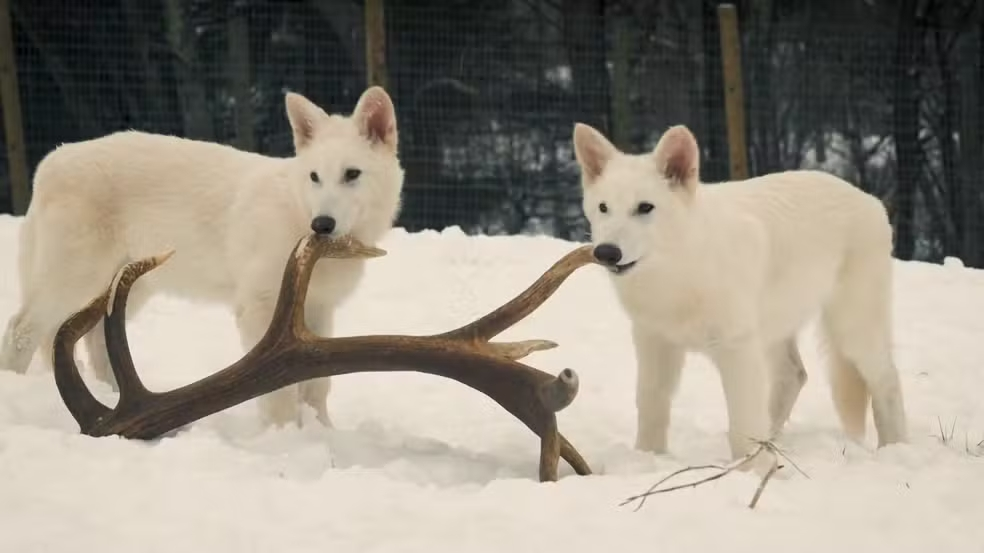

Lobo-terrível pode voltar à natureza? Veja os dilemas ecológicos da espécie 'desextinta'
Uma empresa dos Estados Unidos diz ter trazido de volta o lendário lobo--terrível, extinto há mais de 10 mil anos. Mas especialistas perguntam: como seria a interação desses animais com a fauna dos dias de hoje? A pesquisa é uma saída para a extinção de espécies? E eles são realmente lobos-terríveis ou apenas lobos-cinzentos geneticamente modificados?
➡️ A empresa de bioengenharia Colossal revelou ao mundo dois lobinhos que, aos seis meses, já pesam quase 40 quilos e a irmãzinha, de 3 meses. O anúncio despertou um show de fofura e controvérsia.
🌳 Dilemas do equilíbrio ecológico
Havia 10 mil anos, o lobo-gigante caçava presas da megafauna: preguiças gigantes, cavalos selvagens, mastodontes. Ele ainda teria um papel ecológico?
"Ele não foi caçado até a extinção. Ele se extinguiu porque nós caçamos as presas dele até a extinção", diz o ecólogo Fernando Fernandez, professor da Universidade Federal do Rio de Janeiro (UFRJ). "Que sentido faria você colocar de novo um animal em um sistema em que não existe mais nenhuma das presas que ele é adaptado a caçar?", questiona.
O ecólogo teme que se crie a ilusão de que podemos reverter no futuro um processo que está em curso: a extinção de milhares de espécies, pela destruição do habitat e o aquecimento do planeta.
"As espécies estão se extinguindo diariamente. Muitas delas menos carismáticas que um lobo-terrível", diz Fernandez.
A edição genética pode ajudar a salvar algumas espécies que estão à beira da extinção, como o lobo-vermelho. Menos de 20 indivíduos sobrevivem na região da Carolina do Norte, nos EUA.
Cientistas agora descobriram que o lobo-fantasma carrega genes do lobo-vermelho. Quatro clones foram feitos pela mesma equipe e estão crescendo numa área fechada, assim como os primos terríveis. Um dia, eles poderão reforçar a genética do grupo ameaçado.
Os lobos-terríveis não devem ser soltos na natureza. "Ao colocar um animal desse em um ecossistema completamente diferente, pode-se gerar interações indesejadas", explica o ecólogo.
🐸 Um exemplo disso é o sapo cururu. Há quase 100 anos, ele foi levado para a Austrália para controlar uma praga, o besouro da cana, e se reproduziu aos milhões. Mas está levando à extinção o quoll, um pequeno marsupial que se alimenta do sapo e morre.
A Colossal trabalha com os australianos para introduzir no quoll a resistência ao veneno do sapo cururu – nos predadores aqui do Brasil, isso foi desenvolvido em milhares de anos.
🧬 Como foi a pesquisa
Os genes do lobo-terrível foram mapeados a partir de fósseis de 13 mil e 72 mil anos atrás. Depois, os cientistas compararam com os genes do lobo-cinzento, um animal que vive na América do Norte. 99,5% das características são iguais. Assim, identificaram os genes que fazem o lobo-terrível.
"Nós temos 500 vezes mais DNA de lobos-terríveis que qualquer outra pesquisa. Foi assim que concluímos que as duas variantes separadas por 60 mil anos eram brancas", afirmou Ben Lamm, fundador da Colossal.
Os cientistas editaram o DNA do lobo-cinzento usando uma técnica chamada CRISPR, como quem reescreve um texto trocando palavras. Mas não trocaram o meio por cento que faz a diferença entre as espécies, o que daria milhões de mudanças. Foram 20 edições em 14 genes.
"Nosso objetivo é ter um animal saudável, fazendo o mínimo possível de edições. Focamos em características-chave, como tamanho, musculatura e cor dos pelos", explicou a pesquisadora-chefe do projeto, Beth Shapiro.
O DNA alterado foi colocado em embriões, que foram gestados por fêmeas de cachorro doméstico. O resultado? Filhotes fortes, de pelos brancos, parecidos com os fósseis estudados.
Em outubro do ano passado, nasceram os dois primeiros filhotes: Rômulo e Remo. Matt James, responsável pelo bem-estar dos animais, conversou com o Fantástico.
"Quando Rômulo nasceu e vimos aquele branco brilhante... esse é o momento em que você pensa 'caramba, está acontecendo'", disse James.
Duas semanas depois, ouviu-se o que seria o primeiro uivo em 10 mil anos. James contou: "Um veterinário começou a cantar e os dois começaram a uivar. Foi um momento insano."
Rômulo e Remo estão num recinto de 8 quilômetros quadrados, num local mantido em segredo.
Há três meses nasceu uma fêmea: Khalese. Ela deve se juntar aos dois em breve. James comenta: "Ela ainda é muito pequena, mas já se mostra mandona. Acho que vai acabar sendo a chefe."

🔬 Os lobos-terríveis foram mesmo 'desextintos'?
🐺 Com 20 edições genéticas, os filhotes são lobos-cinzentos geneticamente modificados.
A Colossal publicou o sequenciamento genético dos fósseis, ainda em preprint. Isso significa que a revisão por pares não foi feita, mas está aberta à comunidade científica.
Um dos autores do texto é George R. R. Martin, escritor dos livros que levaram à série "Game of Thrones". Ele também é investidor e consultor da Colossal.
A empresa foi fundada há 4 anos com a promessa de "desextinguir" o mamute. Para isso, repetiriam o processo feito com os lobos, usando o elefante asiático. Alguns genes dos fósseis de mamute já foram testados, resultando em um rato lanoso.
Ben Lamm acredita que até o final de 2026 terão embriões de mamute. "Essas tecnologias são complexas, mas estamos mostrando como podemos remontar DNA antigo, fazer a genômica comparativa e editá-lo rapidamente."
O valor da Colossal ultrapassa US$ 10 bilhões no mercado, porque os avanços podem ser aplicados em várias áreas, como genotransplantes. O que gerou otimismo foi a edição de vários genes ao mesmo tempo.
"Existe toda uma ideia de que, no futuro próximo, a gente possa alterar vários genes ao mesmo tempo que são responsáveis por doenças que a gente chama de complexas ou multifatoriais, que dependem de muitos genes e interação com o ambiente", diz a bióloga molecular Mayana Zatz, referência no estudo de genética no Brasil.